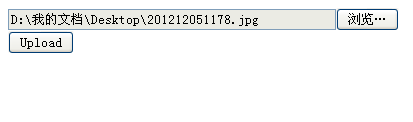

文件上传

依赖关系
使用方法
<input id="fileToUpload" type="file" size="45" name="fileToUpload" class="input"></td>
<button class="button" id="buttonUpload" onclick="return ajaxFileUpload();">Upload</button></td>
function ajaxFileUpload()
{
$.ajaxFileUpload
(
{
url:'xxx',
secureuri:false,
fileElementId:'fileToUpload',
dataType: 'json',
beforeSend:function()
{
$("#loading").show();
},
complete:function()
{
$("#loading").hide();
},
success: function (data, status)
{
alert(data)
},
error: function (data, status, e)
{
alert(e);
}
}
)
return false;
}
属性解释
| 名称 |
类型 |
描述 |
默认值 |
| url |
string（字符串） |
表示处理文件上传操作的文件路径 |
null |
| fileElementId |
string（字符串） |
表示文件域ID。如上：fileToUpload |
null |
| secureuri |
boolean（布尔型） |
是否启用安全提交 |
false |
| dataType |
string（字符串） |
返回数据 |
可取值json,xml,script,html |
| success |
|
提交成功后的回调函数。 |
|
| error |
|
发生错误时的回调函数 |
|
| complete |
|
无论成功与否的回调函数。 |
|